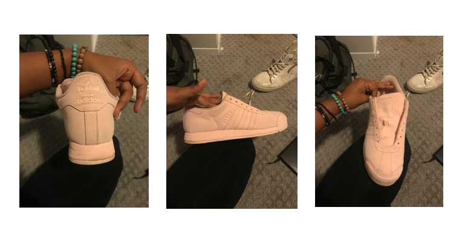

Blue and Black
Before

I start off all my shoe designs by buying the shoes from a thrift store. I purchased these for 10 dollars at Playdoughs closet. (wow!)
Research
I did research on what other Adidas Samoa shoe colors were and how the bodice could be otherwise painted. Specifally how the colors were coordinated and matched within the shoe. I highlighted some of those differences below.

I also watched tons of videos on youtube to figure out what kind of shoe paint to buy, how to apply it and where to buy it. These are some of the samples I purchased.

Sketch + Ideation

I drew the bodice of the shoe on a piece of paper to understand what the saturation would look like. I am keen on black and blue, so I based the design off those colors and a little bit of a silver lining on the heels.
Final Product
This is the final product. I'm satisfied on the actual paint job, but I did waste tons of paint because I was not familiar with the process (oops). Now I know more for next time!

Personal Takeaways
My ultimate goal for the 2018-2019 year is to make a shoe - not just customs. I want to start with customs so I can form an opinion on what a comfortable shoe would be. This is what I learned.
- I HAVE TO LET MY SHOES DRY - I did not let the soles of my shoe dry properly so the paint kept chipping. I also must add a finisher on the bottom of the shoe.
- Harsh heels - the heels of this shoe were too harsh to wear with ankle socks. I want to make the heels of my future shoe design soft, flexible and further from the users heel.
- Sole weight - the soles of these shoes were heavy, it was clear how much weight was on the bottom.
- Sole design - the soles of these shoes were intricate, and although thats good for aesthetics, the design kept trapping dirt.